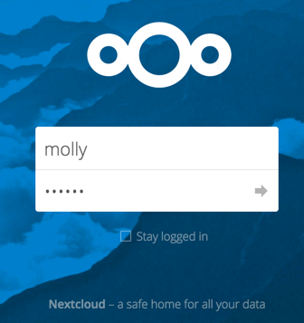

Die Nextcloud Web-Oberfläche¶
Nextcloud kann über jeden Web-Browser verwendet werden; öffnen Sie einfach die URL Ihres Nextcloud-Servers und melden sich mit Ihrem Benutzernamen und Password an. Es werden folgende Browser unterstützt:
Firefox 14+
Chrome 18+
Safari 7+
IE11+
Microsoft Edge

Note
Sind Apps wie z.B. files_external oder encryption aktiviert,
wird die Angemeldet bleiben Checkbox nicht angezeigt.
Navigieren auf der Web-Oberfläche¶
Die Standard-Applikation der Web-Oberfläche ist die “Dateien”-App. Diese wird nach einem erfolgreichen Login automatisch geöffnet und erlaubt das Hinzufügen, Löschen und Teilen Ihrer Dateien.

Die Web-Oberfläche enthält folgende Bereiche und Funktionen:
- App-Auswahl Menü: Dieses Menü befindet sich in der oberen linken Ecke. Mit einem Klick auf den Pfeil öffnet sich ein Dropdown-Menü mit allen aktuell aktivierten Apps. Mit einem Klick auf eine Applikation, wird diese geöffnet.
- App-Informationen-Bereich: In der linken Seitenleiste sind Applikations- spezifische Filter und Aufgaben zu finden. Die “Dateien”-App zeigt in der linken Seitenleiste diverse Filter, die das schnelle Finden von Dateien erleichtern. So lassen sich beispielsweise schnell die “mit Ihnen geteilten” und “von Ihnen geteilten” Dateien auflisten. Andere Apps haben andere Seitenleisten.
- Applikations-Bereich: In der Mitte der Nextcloud Web-Oberfläche ist die eigentliche Applikation zu sehen. In der “Dateien”-App werden hier z.B. Ihre Dateien und Ordner angezeigt.
- Navigationsleiste: Unmittelbar über dem Applikations-Bereich befindet sich die Navigationsleiste, die z.B. wie in der “Dateien”-App eine “Brotkrumennavigation” enthält, um schnell zwischen Ordnerhierarchien zu wechseln.
- New-Button: Dieser Button befindet sich in der Navigationsleiste und erlaubt das Hochladen sowie Erstellen neuer Dateien und Ordnern.
Note
Dateien können auch per Drag & Drop hochgeladen werden. Diese Funktion wird momentan nur von Chromium-basierenden Browsern unterstützt.
- Suchen-Feld: In der oberen rechten Ecke lassen sich über die Suche z.B. Dateien und Ordner finden.
- Galerie-Button: Dieser Button sieht aus wie vier kleine Quadrate und springt mit einem Klick auf ihn direkt zu Ihrer Bilder-Galerie.
- Persönliche Einstellungen-Menü: Klicken Sie auf Ihren Benutzernamen in der oberen
rechten Ecke und wählen “Persönlich”, um Ihre persönlichen Einstellungen zu öffnen.
Dort können Sie folgende Funktionen und Einstellungen vorfinden:
- Links zu den Desktop- und Mobil-Applikationen
- Den Einrichtungsassistenten erneut anzeigen
- Aktuell verbrauchten und insgesamt verfügbaren Speicherplatz einsehen
- Password-Verwaltung
- Name, E-Mail Adresse sowie Profilbild Einstellungen
- Verbundene Browser und Geräte verwalten
- Gruppen-Mitgliedschaften verwalten
- Sprache der Oberfläche ändern
- Benachrichtigungen verwalten
- Federated Cloud-ID
- Social Media Buttons zum Teilen
- SSL-Zertifikats-Manager
- Nextcloud Versions-Informationen
Unter Eigene Einstellungen vornehmen können Sie mehr über diese Einstellungen erfahren.